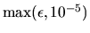
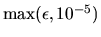

There are two sources of error whose effects can be measured by the bounds in this chapter: roundoff error and input error. Roundoff error arises from rounding results of floating-point operations during the algorithm. Input error is error in the input to the algorithm from prior calculations or measurements. We describe roundoff error first, and then input error.
Almost all the error bounds LAPACK provides are multiples of
machine epsilon,
which we abbreviate
by  .
Machine epsilon bounds the roundoff in individual
floating-point operations.
It may be loosely defined as the largest relative error
in any floating-point operation that neither overflows nor underflows.
(Overflow means the result is too
large to represent accurately, and underflow means the result is too
small to represent accurately.) Machine epsilon is available either by
the function call
SLAMCH('Epsilon') (or simply SLAMCH('E')) in single precision, or
by the function call DLAMCH('Epsilon') (or DLAMCH('E')) in double precision.
See section 4.1.1 and
Table 4.1 for a discussion of common values of machine
epsilon.
.
Machine epsilon bounds the roundoff in individual
floating-point operations.
It may be loosely defined as the largest relative error
in any floating-point operation that neither overflows nor underflows.
(Overflow means the result is too
large to represent accurately, and underflow means the result is too
small to represent accurately.) Machine epsilon is available either by
the function call
SLAMCH('Epsilon') (or simply SLAMCH('E')) in single precision, or
by the function call DLAMCH('Epsilon') (or DLAMCH('E')) in double precision.
See section 4.1.1 and
Table 4.1 for a discussion of common values of machine
epsilon.
Since underflow is almost always less significant than roundoff, we will not consider it further. Overflow usually means the computation is invalid, but there are some LAPACK routines that routinely generate and handle overflows using the rules of IEEE arithmetic (see section 4.1.1).
Bounds on input errors, or errors in the input parameters inherited
from prior computations or measurements, may be easily incorporated
into most LAPACK error bounds.
Suppose the input data is accurate to, say, 5 decimal digits
(we discuss exactly what
this means in section 4.2). Then one simply replaces
 by

in the error bounds.
by

in the error bounds.